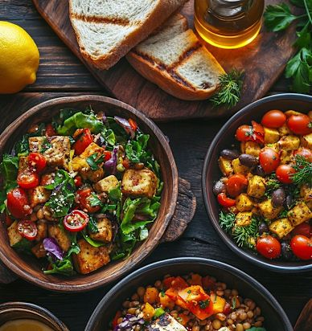

WELCOME TO NUTRIPLAN
Discover delicious vegetarian recipes and make healthy eating a little easier every day.
Explore Recipes
OUR PURPOSE
NutriPlan helps users explore vegetarian recipes, view nutritional information, and keep their favorite meals organized in one convenient place. We want to make discovering healthy meal ideas simple and enjoyable.
Everything you need to explore your next favorite meal.
Search for vegetarian recipes and explore new meal ideas.
Keep your favorite recipes together for easy access.
Explore recipe details and nutritional information.
Share your rating with a simple five-star scale.
Start exploring vegetarian recipes with NutriPlan.
Explore Recipes